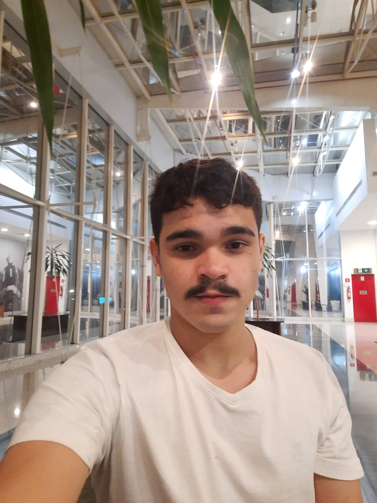

Sobre os Criadores
Obrigado por querem saber mais sobre a nossa nos esforçamos bastantes para que criassemos um otimo site e acessivel para todos
Vamos começar com apresentação 😊.
Me chamo Vinicio Rocha Tenho 18 anos faço Analise De Desenvolvimentos de Sistema estou no segundo semestre e estou empolgado para descobrir mais sobre a area da programaçao,estou nessa area ja faz 2 anos e meu objetivo e aprender mais e ter conhecimento o suficiente para entrar na Microsoft.
Meu Github brabisboy
Meu nome é Gabriel Franco, tenho 17 anos e sou estudante de Análise e Desenvolvimento de sistemas, tenho interesse na área há 8 anos e trabalho nela há 2, meu objetivo é criar uma empresa que possa cobrir todas a bases da informática a um preço justo e acessível

Meu Github RyuujiGod
Fonte do Gif
tenor.com